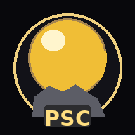
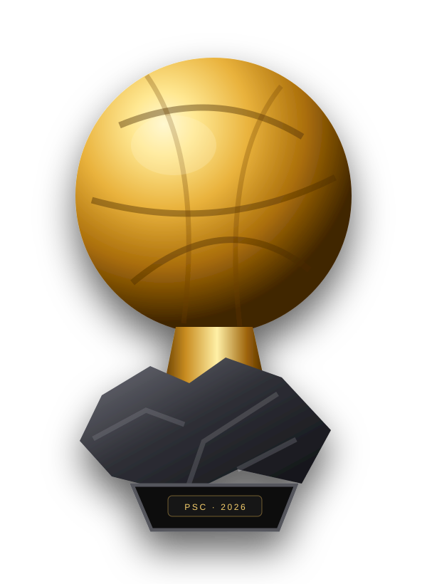

Orden oficial de valoración
- Rendimiento individual y carácter decisivo/impresionante.
- Rendimiento colectivo y palmarés.
- Clase y fair play.
1º · 152º · 123º · 104º · 85º · 76º · 57º · 48º · 39º · 210º · 1

BDO · PSC¿Quién ganará el Balón de Oro 2026? Un data room visual sobre rendimiento, Mundial, títulos, sistema de votación, cuotas y fragmentación del voto. No intenta adivinar por reputación: separa hechos, hipótesis y precio de mercado.

La ventana 2025/26 incluye el Mundial. El criterio oficial prioriza la actuación individual; después llegan rendimiento colectivo y títulos; por último, clase y fair play.
3 de agosto de 2025 → 19 de julio de 2026. Después de esa fecha pueden cambiar narrativa, opinión y cuotas, pero no se incorporan nuevos méritos deportivos a la temporada evaluada.
La gala está programada para el 26 de octubre de 2026 en el London Palladium.
Las probabilidades PSC son estimaciones editoriales independientes del mercado. No son datos oficiales ni garantías.
El expediente más continuo del curso: volumen goleador extraordinario, títulos domésticos y un Mundial productivo.
Combina una gran campaña de club con el gran título internacional y una narrativa de precocidad sin precedentes.
La candidatura más fuerte si muchos periodistas priorizan el primer criterio oficial: rendimiento individual puro.
Su temporada de club fue incompleta; su candidatura se dispara por ganar el Mundial y ser elegido mejor jugador del torneo.
Su ruta es clara: enorme Mundial, final, números de élite y peso histórico global; el precio de la cuota es el punto debatible.
Importan aunque no partan como favoritos: pueden absorber primeras posiciones y alterar el reparto de puntos.
Un periodista puede puntuar a varios españoles en la misma papeleta. La verdadera lucha es quién recibe los 15 puntos de la primera posición y cuántas veces.
Rodri, Lamine, Fabián, Cubarsí y otros perfiles pueden recibir puntos simultáneamente. La tensión aparece al elegir quién encabeza la papeleta.
Puede haber afinidades individuales o regionales, pero no existe base suficiente para asumir un “bloque latinoamericano” automático. Su apoyo histórico ha sido global.
Su candidatura es especialmente fácil de entender: volumen goleador anual + títulos + Mundial. Eso puede facilitar una concentración transversal de puestos altos.
El jurado masculino se limita a un representante por cada país del top 100 FIFA.
La primera posición da 15 puntos y la segunda 12. Concentrar primeros puestos tiene un impacto enorme.
Ser el mejor del Mundial fortalece muchísimo una candidatura, pero la historia demuestra que no garantiza el Balón de Oro.
Su triunfo de 2024 demostró que un mediocentro puede superar a candidatos con cifras ofensivas muy superiores.
@20 significa un break-even matemático del 5%; no significa que el jugador “tenga exactamente” un 5%.
En mercados especiales una cuota puede moverse por liquidez, ajuste de riesgo o dinero nuevo sin que exista información sobre la votación.
La lectura PSC no afirma quién “va a ganar”. Ordena el interés de las tres cuotas que vamos a simular por la discrepancia entre precio y fundamentos del análisis.
⚡ Simular Rodri + MessiCuotas iniciales de la captura: Rodri @20 · Messi @13 · Lamine @3,75. Puedes editarlas. El simulador acepta cualquier inversión entre 0 y 1.000 € y recalcula todo en directo.
Botones rápidos, barra de 0–1.000 € y campo manual. Los resultados muestran retorno, beneficio neto, ROI y estado para cada posible ganador.
| Resultado | Reparto | Apostado | Cuota | Retorno | Beneficio neto | ROI | Estado |
|---|
Incluye la probabilidad PSC asignada a Kane, Mbappé, otros candidatos y cualquier jugador desactivado como resultado de pérdida del stake.
El EV usa exclusivamente las probabilidades editoriales PSC: Rodri 9%, Messi 6%, Lamine 25% y resto 60%. Sirve para comparar escenarios, no para predecir la votación.
El análisis separa dos preguntas: “¿quién es más probable?” y “¿qué cuota parece más desalineada?”. Lamine tiene mucha más probabilidad absoluta que Rodri dentro del modelo, pero @20 exige a Rodri superar únicamente un 5% para alcanzar break-even.
Messi conserva un camino real por su Mundial y su peso histórico, aunque @13 requiere superar 7,69%. La web permite modificar las cuotas y comprobar cómo cambia la conclusión sin rehacer el análisis.
La web diferencia datos oficiales de hipótesis editoriales. Las cuotas del simulador son el snapshot aportado el 21/09/2026 y pueden cambiar.